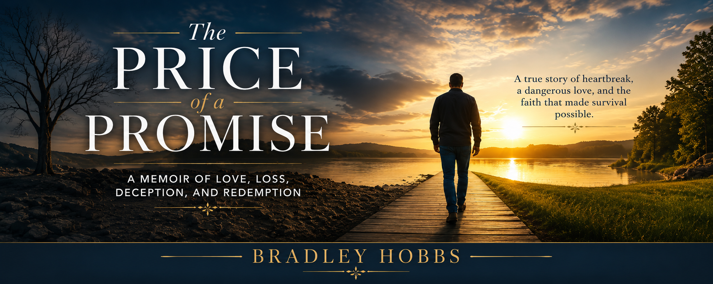

About the Author
Bradley Hobbs is a writer whose work often explores faith, healing, resilience, and the deeply personal journeys that shape who we become. Through memoir, devotionals, and reflective writing, he seeks to illuminate experiences that many people endure silently while offering hope to those searching for understanding and restoration.
The Price of a Promise emerged from a place of compassion and concern. Although portions of the narrative draw from personal experiences and observations, the heart behind this book reaches beyond a single individual. The story was written to give voice to struggles that often remain hidden behind shame, confusion, fear, and isolation. Countless people experience deception, manipulation, financial exploitation, and emotional trauma without ever finding a safe place to tell their story.
This memoir was inspired in large part by someone deeply loved and cared for, someone whose battle unfolded quietly behind the scenes. Watching that struggle created a burden that eventually found expression through writing. While names, circumstances, and perspectives may differ, the emotions explored throughout these pages reflect realities experienced by many people who find themselves trapped in situations they never expected.
Through this memoir, Bradley hopes readers will gain a deeper understanding of the human cost behind romance scams and similar forms of exploitation. More importantly, he hopes those who are suffering in silence will recognize that they are not alone, that healing remains possible, and that difficult chapters do not have the authority to determine the rest of a person's life.
When he is not writing, Bradley enjoys spending time with family, pursuing creative projects, serving others through ministry, and encouraging people through messages of faith, hope, healing, and restoration.
His greatest desire is that every reader closes this book with a renewed understanding that truth brings freedom, healing requires courage, and hope remains possible even after the most painful disappointments.